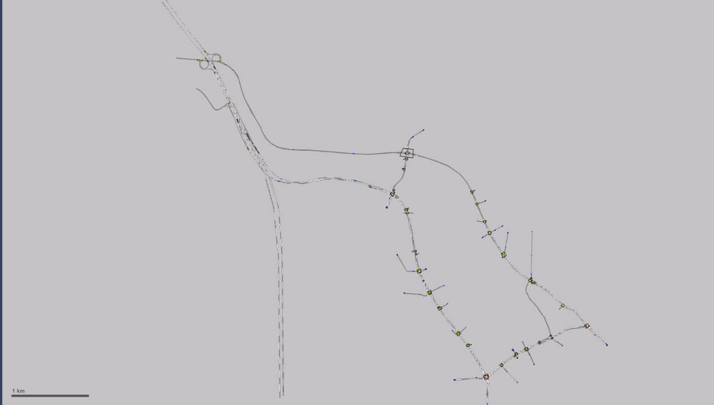
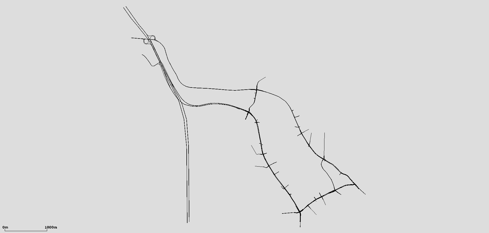
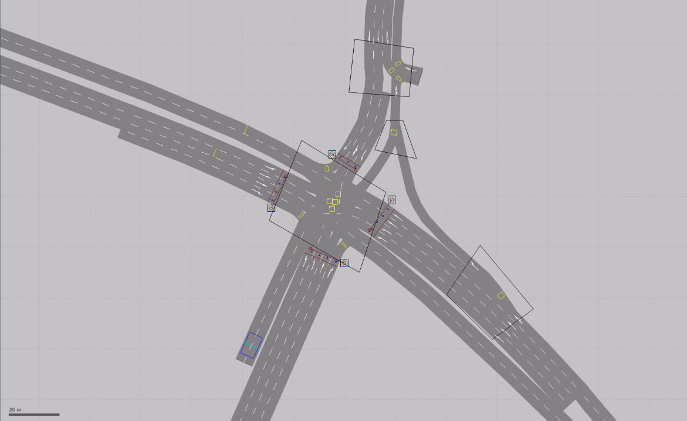
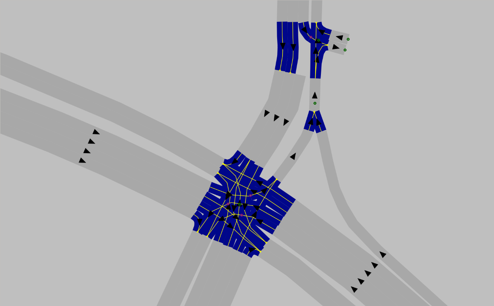
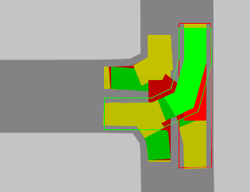
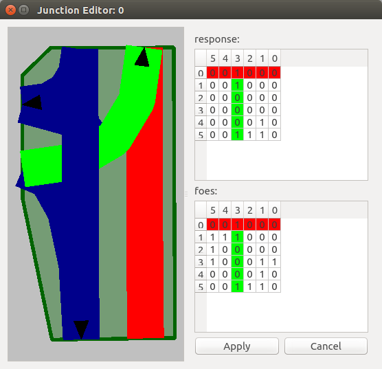
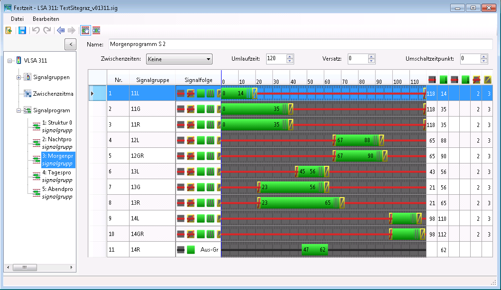
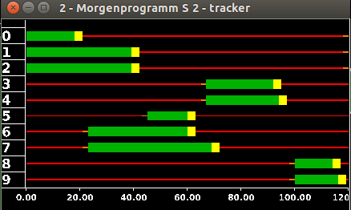

VISSIM
Extension tools for importing features from VISSIM *.inpx files
Extending SUMO network conversion#
With version 6 of PTV's commercial traffic microsimulation software, which is used to visualize traffic behavior not only in German-speaking countries, the file format was changed to an XML-based .inpx format. However, the SUMO tool netconvert, which converts networks from other source formats into a SUMO network, was still based on the old .inp format through version 0.23.0. A newer version is therefore required to convert current networks in the .inpx format. Since nothing in the program workflow has changed apart from reading the network information, the procedure for using netconvert to convert VISSIM networks remains the same.
During conversion of .inpx networks, priority rules within SUMO junctions are also defined by reading the conflict-area definitions from VISSIM.
In addition, Python tools were developed for the XML-based .inpx format. After the raw network information has been converted, these tools can import routes, vehicle flows, traffic lights, and detectors.
Usage#
Run netconvert for VISSIM networks as follows:
netconvert --vissim-file <VISSIM_FILE> –-output-file MySUMOFile.net.xml
The conversion process determines whether the VISSIM network uses the new inpx format or the old inp format. Users therefore do not need to know which version the VISSIM network uses. However, if you want to use the additional Python tools to convert data beyond the network itself, the network must be in .inpx format.
Examples#
Depending on the complexity of the network, additional adjustments may be necessary after conversion. The following figures show an example of converting an .inpx network to a SUMO network.


The figure "Junction conversion" shows a complex intersection created in VISSIM and then converted to SUMO. The figure shows that the geometry (and turning relationships) are translated correctly.


Priorities based on VISSIM conflict areas#
To verify the conversion of conflict areas, a VISSIM intersection was created that contradicts the usual priority rules for right-hand traffic. The VISSIM network was then converted to a SUMO network using netconvert. The figures "Conflict areas" show that the priority given to left-turning vehicles over through traffic was translated correctly.
Conflict areas


The data for the situation shown can be found in the test data directory at tests/netconvert/import/leftist_conflictarea-prio/. A corresponding README.md file is also located there.
Converting routes and vehicle flows#
Route and vehicle-flow definitions are an essential part of a simulation. The Python tool convert_vissimXML_flows_statRoutes.py parses VISSIM routes and vehicle flows and uses that information to create a SUMO route file for the converted network. This file has the extension .rou.xml and is specified as an argument when running the simulation. Conversion supports only static route definitions that specify an exact route sequence. Run the tool as follows:
convert_vissimXML_flows_statRoutes.py -V <vissim-file> -n <sumo-net-file> -o <output-filename>
VISSIM route definitions#
Vehicle flows are identified in the .inpx file by the XML tag <timeIntervalVehVolume>. Each vehicle flow is assigned to a link and is defined by a name (which may be empty) and a unique ID. Because the vehicle flow rate can change over time, time intervals are added to a flow and defined by the vehicle composition and traffic volume. The start times of the intervals are specified in milliseconds, and traffic volume is measured in vehicles per hour (veh/h). A vehicle-flow definition in VISSIM looks like this:
<vehicleInput anmFlag="false" link="9" name="Parkplatz 30221" no="1">
<timeIntVehVols>
<timeIntervalVehVolume cont="false" timeInt="1 0" vehComp="6" volType="STOCHASTIC" volume="48.000000"/>
<timeIntervalVehVolume cont="false" timeInt="1 900000" vehComp="6" volType="STOCHASTIC" volume="84.000000"/>
<timeIntervalVehVolume cont="false" timeInt="1 1800000" vehComp="6" volType="STOCHASTIC" volume="120.040000"/>
<timeIntervalVehVolume cont="false" timeInt="1 2700000" vehComp="6" volType="STOCHASTIC" volume="120.040000"/>
</timeIntVehVols>
</vehicleInput>
In VISSIM, route decisions are grouped by their starting points. Multiple static routes can start from a single link and lead to different destination links. The destination is specified by the destLink attribute. As with vehicle flows, time intervals are defined for each route; these specify the relative shares of the flow assigned to each route. The route itself is specified by the sequence of links introduced by the XML tag <linkSeq>. The following example shows a route definition:
<vehicleRoutingDecisionStatic allVehTypes="true" anmFlag="false" combineStaRoutDec="false" link="9" name="Parkplatz 30221" no="1" pos="1.000000">
<vehicleRouteStatic destLink="205" destPos="20.916000" name="" no="113" relFlow="2 0:4.000000, 2 900000:6.990000, 2 1800000:9.990000, 2 2700000:9.990000, 2 3600000:12.660000, 2 4500000:16.330000, 2 5400000:20.990000, 2 6300000:15.660000, 2 7200000:16.660000, 2 8100000:16.330000">
<linkSeq>
<intObjectRef key="10381"/>
<intObjectRef key="269"/>
<intObjectRef key="10154"/>
<intObjectRef key="117"/>
<intObjectRef key="10150"/>
<intObjectRef key="76"/>
<intObjectRef key="10145"/>
</linkSeq>
</vehicleRouteStatic>
</vehicleRoutingDecisionStatic>
SUMO route definitions#
In SUMO, multiple routes can be grouped into a route distribution, as in VISSIM, with all routes sharing a common starting point. Each route in the distribution is defined by its sequence of edges and its probability. The probabilities of all routes must sum to 1. A route distribution is referenced by its unique ID:
<routeDistribution id="81_900.0">
<route edges="81 83 210 211 268 117 76 115 213 212 114 265 203 204 263 109 52 188 297 190 296 186 70 298 238 299 124" id="163" probability="0.372751499001"/>
<route edges="81 83 210 211 268 117 76 115 213 212 114 265 203 204 263 109 52 188 297 190 296 186 70 298 238 299 239 72 " id="181" probability="0.125916055963"/>
<route edges="81 83 210 211 268 117 76 115 213 212 114 265 203 204 263 109 52 188 297 190 296 186 181 184" id="187" probability="0.171219187209"/>
<route edges="81 83 215 216 217 272 16" id="193" probability="0.211192538308"/>
<route edges="81 83 210 211 268 13" id="195" probability="0.11892071952"/>
</routeDistribution>
Vehicle-type distributions are also part of a route definition. They specify the properties and probabilities of the defined vehicle types, which must be defined beforehand. As with route distributions, vehicle-type distributions are referenced by their unique ID:
<vTypeDistribution id="6">
<vType accel="3.500000" id="t1001_D6" length="4.454081632653061" maxSpeed="14.722222222222221" probability="0.900000"/>
<vType accel="7.300000" id="t1002_D6" length="10.086636363636364" maxSpeed="14.722222222222221" vClass="truck" probability="0.100000"/>
</vTypeDistribution>
Vehicle flows are also defined in the route file. As in VISSIM, each flow is specified for a particular time interval. It is important to sort flows in ascending order by time; otherwise, they may not be read correctly. Each flow is also assigned a previously defined route distribution, a vehicle-type distribution, and an ID. SUMO flows are defined as follows:
<flow begin="0.0" color="1,1,0" end="900.0" id="fl81_st0.0" route="81_0.0" type="6" vehsPerHour="94.56"/>
<flow begin="900.0" color="1,1,0" end="1800.0" id="fl81_st900.0" route="81_900.0" type="6" vehsPerHour="120.08"/>
<flow begin="1800.0" color="1,1,0" end="2700.0" id="fl108_st1800.0" route="108_1800.0" type="6" vehsPerHour="161.88"/>
General information on defining routes and vehicle flows is available here: Definition of Vehicles, Vehicle Types, and Routes
Implementation#
The convert_vissimXML_flows_statRoutes.py tool imports the following VISSIM attributes:
- Static route decisions
- Vehicle flows
- Vehicle types
- Speed
- Length
- Maximum acceleration
- Vehicle composition
In VISSIM, speed, acceleration, and length are represented as probability distributions, so their mean values must first be calculated from the data. Note also that vehicle flows are sorted by time to ensure correct conversion. The chronological order must therefore also be maintained when editing flows. The tool creates a .rou.xml file containing all route information required for a SUMO simulation. This file must then be added to the SUMO configuration file.
Converting traffic-light programs#
The additional tool tls_vissimXML2SUMO.py parses VISSIM traffic lights and adds this information to the converted SUMO network. Run it as follows:
tls_vissimXML2SUMO.py -V <vissim-file> -S <sumo-file> -o <output-filename>
Traffic-light definitions in VISSIM#
In VISSIM, an additional .sig file is created for each traffic light. It contains all relevant information about the defined signal programs, such as the signal sequence and signal order. The remaining traffic-light definitions are stored in the network's existing .inpx file. The following example illustrates the structure of these files.
.inpx file#
In the .inpx file, traffic lights are identified by the XML tag <signalController>. The attributes required for conversion to SUMO format are the associated .sig file and the list of defined signal groups. Signal groups can be assigned to multiple lanes and are defined by a signal sequence. These sequences appear as an attribute of the child element <signalOutputConfigurationElement>. A traffic-light definition in VISSIM looks like this:
<signalController active="true" cycTm="0.000000" cycTmIsVar="true" debug="false" guiFile="VISSIG_GUI.dll" name="VLSA 301 (WienerStr./JudendorferStr.)" no="301" offset="0.000000" progFile="VISSIG_Controller.dll" progNo="1" scDetRecFile="VISSIM_302.ldp" scDetRecShortNam="false" sigTmsTabAutoConfig="true" supplyFile1="vissig.config" supplyFile2="TestsiteGraz_v01301.sig" supplyFile3="" type="FIXEDTIME">
<sGs>
<signalGroup amber="0.000000" greenFlsh="0.000000" minGreen="0.000000" minRed="0.000000" name="11GR" no="1" redAmber="0.000000" type="NORMAL"/>
< ... >
<signalGroup amber="0.000000" greenFlsh="0.000000" minGreen="0.000000" minRed="0.000000" name="14R" no="8" redAmber="0.000000" type="NORMAL"/>
</sGs>
<wttFiles>
<intObjectRef key="1"/>
</wttFiles>
<sigTmsTabConfig>
<signalOutputConfigurationElement configName="SIGGRP" detPort="0" sg="301 1" title="" varNo="1" wttFilename="vissim"/>
<signalOutputConfigurationElement configName="SIGGRP" detPort="0" sg="301 2" title="" varNo="2" wttFilename="vissim"/>
</sigTmsTabConfig>
</signalController>
The .inpx file also contains the definitions of the signal heads for all traffic lights. Each signal head is assigned to a lane on a link and belongs to a previously defined signal group:
<signalHeads>
<signalHead allPedTypes="true" allVehTypes="true" complRate="1.000000" dischRecAct="false" isBlockSig="false" lane="223 1" localNo="6" name="" no="1" pos="98.115000" sg="305 6" slowDownDist="3.000000" type="CIRCULAR" vAmberBlock="0.000000"/>
<signalHead allPedTypes="true" allVehTypes="true" complRate="1.000000" dischRecAct="false" isBlockSig="false" lane="276 3" localNo="5" name="" no="2" pos="82.377000" sg="305 5" slowDownDist="3.000000" type="CIRCULAR" vAmberBlock="0.000000"/>
</signalHeads>
.sig file#
Signal phases are referenced by ID in the .sig file. The mapping between IDs and phases is defined at the beginning of the file as follows:
<signaldisplays>
<display id="1" name="Red" state="RED"/>
<display id="2" name="Red/Amber" state="REDAMBER"/>
</signaldisplays></source>
VISSIM also uses fixed signal sequences to define a signal program. These are also located near the beginning of the .sig file. They define the order of the phases, which are referenced by their respective IDs:
<signalsequences>
<signalsequence id="5" name="Red-Red/Amber-Green-Flashing Green-Amber">
<state display="1" isFixedDuration="false" isClosed="true" defaultDuration="1000" />
<state display="2" isFixedDuration="true" isClosed="true" defaultDuration="1000" />
<state display="3" isFixedDuration="false" isClosed="false" defaultDuration="5000" />
<state display="5" isFixedDuration="true" isClosed="false" defaultDuration="4000" />
<state display="4" isFixedDuration="true" isClosed="true" defaultDuration="3000" />
</signalsequence>
<signalsequence id="12" name="Off-Green">
<state display="7" isFixedDuration="false" isClosed="true" defaultDuration="1000" />
<state display="3" isFixedDuration="false" isClosed="false" defaultDuration="5000" />
</signalsequence>
</signalsequences>
All signal programs and their cycle times are then defined:
<prog id="1" cycletime="80000" switchpoint="0" offset="13000" intergreens="0" fitness="0.000000" vehicleCount="0" name="Morgenprogramm S 2.7"/>
Signal groups are defined by the start times of the red and green phases and the durations of the remaining phases, which are specified in the corresponding signal sequence:
<sg sg_id="1" signal_sequence="5">
<cmds>
<cmd display="3" begin="13000" />
<cmd display="1" begin="46000" />
</cmds>
<fixedstates>
<fixedstate display="2" duration="2000" />
<fixedstate display="5" duration="4000" />
<fixedstate display="4" duration="3000" />
</fixedstates>
</sg>
Traffic-light definitions in SUMO#
Unlike VISSIM, SUMO does not require a separate file for each traffic light. The definitions of all traffic lights and their programs are written to the existing network file, which also contains all graph information. The following explains an example of a SUMO traffic-light definition.
A traffic light is identified in the SUMO network file by the XML element <tlLogic>. The attributes id, type, offset, and programID can be specified, although conversion defines only id and programID. The traffic-light ID must match the ID of its associated junction (junction id = tlLogic id), and programID specifies the name of the signal program. The type attribute is always set to "static", meaning that the phases have fixed durations. The traffic-light offset, specified by the offset attribute, is also always set to 0.00. The child elements define the individual signal phases, each with a duration in seconds and a state. Each character in states defines the current state of a lane:
<tlLogic id="69" type="static" programID="Tagesprogramm S 5.3" offset="0.00">
<phase duration="20.00" state="Grrr"/>
<phase duration="20.00" state="yyyy"/>
<phase duration="100.00" state="rGGG"/>
<phase duration="100.00" state="yyyy"/>
</tlLogic>
The linkIndex attribute of the corresponding connection specifies which lane corresponds to each state index. In addition, every connection controlled by a traffic light must be assigned to that traffic light. To do this, set the tl attribute to the ID of the relevant traffic light:
<connection dir="r" from="117" fromLane="0" to="88" toLane="0" via=":69_1_0" tl="69" linkIndex="2" state="o"/>
<connection dir="s" from="117" fromLane="0" to="76" toLane="0" via=":69_2_0" tl="69" linkIndex="3" state="o"/>
<connection dir="s" from="117" fromLane="1" to="76" toLane="1" via=":69_2_1" tl="69" linkIndex="1" state="o"/>
<connection dir="r" from="89" fromLane="0" to="76" toLane="0" via=":69_0_0" tl="69" linkIndex="0" state="o"/>
The junction where the traffic light is placed must also be defined accordingly. This is done using the type attribute, which specifies the junction's control type. If a traffic light is assigned to a junction, its type must be set to "traffic_light":
<junction id="69" incLanes="89_0 117_0 117_1" intLanes=":69_0_0 :69_1_0 :69_2_0 :69_2_1" shape="3276.61,1952.22 3277.64,1946.15 3275.74,1944.30 3269.32,1943.27 3265.23,1952.29 3274.96,1953.43" type="traffic_light" x="3273.91" y="1947.87">
<request cont="0" foes="1100" index="0" response="1100"/>
<request cont="0" foes="0000" index="1" response="0000"/>
<request cont="0" foes="0001" index="2" response="0000"/>
<request cont="0" foes="0001" index="3" response="0000"/>
</junction>
SUMO also allows multiple programs to be defined for one traffic light. This is done by defining a weekly switching schedule (WAUT). The startProg attribute specifies which program is selected at the start of the simulation. This initial program is taken from the VISSIM network's .inpx file, and signal programs are mapped using their program IDs. During the simulation, signal programs can be changed manually in the GUI or automatically at a specified time using the <wautSwitch> child element:
<WAUT refTime="0" id="myWAUT" startProg="weekday_night">
<wautSwitch time="21600" to="weekday_day"/>
<wautSwitch time="79200" to="weekday_night"/>
</WAUT>
More information about defining traffic lights is available here: Traffic Lights.
Implementation#
Unlike the other tools, this tool must also read all .sig files that were automatically generated for each traffic light. As required by VISSIM, these files must be located in the same directory as the .inpx file. After all signal displays have been converted, the previously converted SUMO .net file is supplemented with the traffic-light information. All signal programs that can be switched between using the WAUT are read. The default program selected at the beginning of the simulation is defined in the VISSIM network's .inpx file and is imported from there.
Example#


The two signal programs shown here are compared using the graphical interfaces of VISSIM and SUMO. The figure shows that the converted signal groups match. However, VISSIM includes a flashing-green signal state that is not defined in SUMO, so it had to be simplified to green during conversion. The figure also shows that not all signal groups defined in VISSIM were imported into SUMO. These groups were defined in VISSIM but were not assigned to any link, so they have no effect on the simulation.
Converting induction loops and travel-time measurements#
The Python script convert_detectors2SUMO.py reads induction loops and travel-time measurements from a VISSIM network and imports them into the SUMO network previously converted by netconvert. Conversion creates an additional .add.xml file, which must then be added to the SUMO configuration file for the simulation. Run the script as follows:
convert_detectors2SUMO.py -V <vissim-file> -S <sumo-file> -o <output-filename>
Detector definitions in VISSIM#
Cross-section measurements are identified in VISSIM by the XML tag <dataCollectionPoint>. Each detector's position is specified by the lane on the link and its distance along that lane:
<dataCollectionPoint lane="108 1" name="301.41" no="1" pos="162.558473"/>
<dataCollectionPoint lane="262 4" name="301.12" no="10" pos="32.960054"/>
Travel-time measurements in VISSIM are defined for links, not individual lanes. The link and distance along it are specified for both the start and end points:
<vehicleTravelTimeMeasurement name="Wienerstrasse_Sueden" no="1">
<start link="207" pos="239.836000"/>
<end link="126" pos="12.867000"/>
</vehicleTravelTimeMeasurement>
Detector definitions in SUMO#
Induction loops in SUMO are defined similarly to cross-section measurements in VISSIM. Their positions are also specified by lane and distance along the lane. However, SUMO additionally allows you to define the time interval over which the data are aggregated.
<inductionLoop file="ind_out.xml" period="900" id="1_301.41" lane="108_0" pos="162.554736186"/>
<inductionLoop file="ind_out.xml" period="900" id="33_359.21" lane="123_0" pos="28.1962390136"/>
As with induction loops, travel-time measurements are defined by their aggregation interval and position. Unlike VISSIM, however, a SUMO travel-time measurement does not have to cover an entire link, because the lanes to be included can be specified.
<entryExitDetector file="time_out.xml" period="900" id="1">
<detEntry lane="207_0" pos="239.753789696"/>
<detEntry lane="207_1" pos="241.370532161"/>
<detExit lane="126_0" pos="23.2884507277"/>
<detExit lane="126_1" pos="23.2873152316"/>
</entryExitDetector>
Implementation#
During network conversion, connecting links from VISSIM are combined into SUMO junctions, so link lengths are not preserved exactly. As a result, the distances along the links no longer match. Detector coordinates are therefore obtained from VISSIM and then transformed into SUMO coordinates. To determine the distance along the link in SUMO, the point on the link closest to the previously obtained coordinates is then found.
Another issue with converting travel-time measurements is that measurements must always define a closed interval, which is not required in VISSIM. This can cause errors during simulation if vehicles pass the end point of a travel-time measurement without ever having passed its start point.